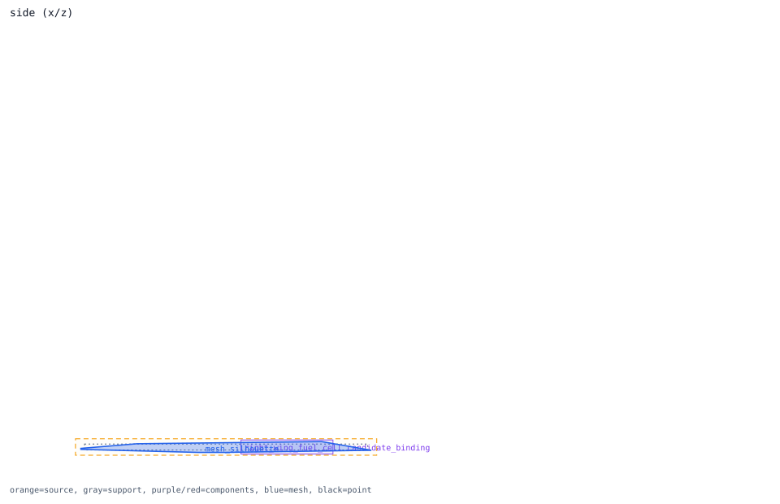

right_wing_fuel_cell
component binding -> right_wing
Review question
Does right_wing_fuel_cell visibly match its assigned outer region right_wing?
Look at
Compare red component box, orange source bounds, gray support bounds, and blue mesh silhouette.
Decision needed
Accept, repair component placement, or hold runtime use for this region.
Trace Details
- component: right_wing_fuel_cell
- system: fuel
- bound outer region: right_wing
- review semantics: candidate_direct_region_binding
- review severity: candidate
- component center distance to region: 0.797217 m
- anomalies:
- geometry observations:
- suppressed anomalies: none
- semantic regions: none
- side relation: {"bound_region_center_y_m": 2.869209, "bound_region_center_y_sign": "positive_y", "bound_region_declared_side": "right", "component_center_y_m": 2.8, "component_center_y_sign": "positive_y", "component_declared_side": "right", "side_sign_mismatch": false}
- blocked region binding: {"blocked": false, "blocked_region_id": "", "preferred_region_ids": []}
- review notes: candidate direct binding after visual review

